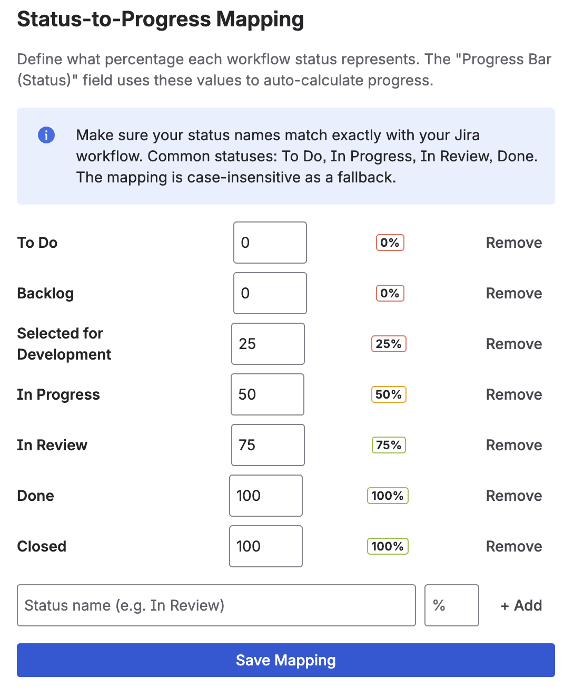
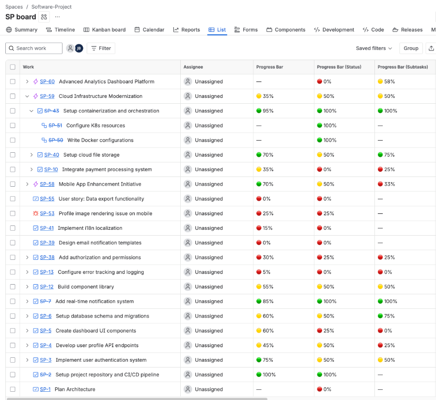
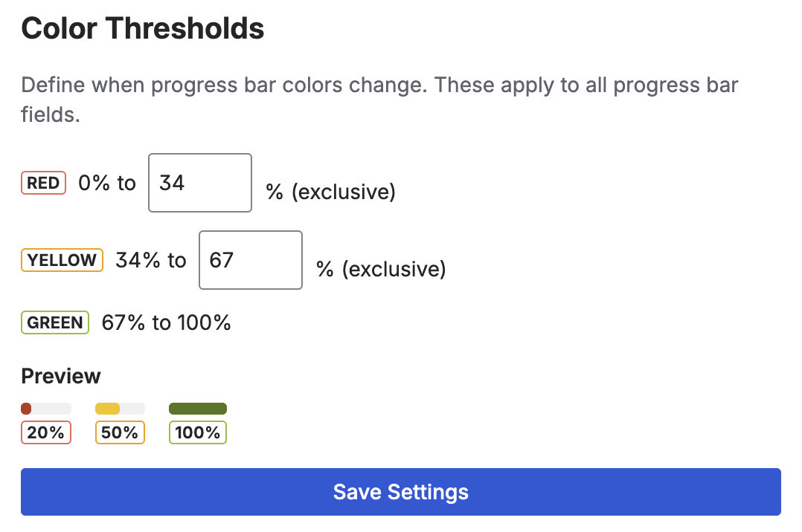
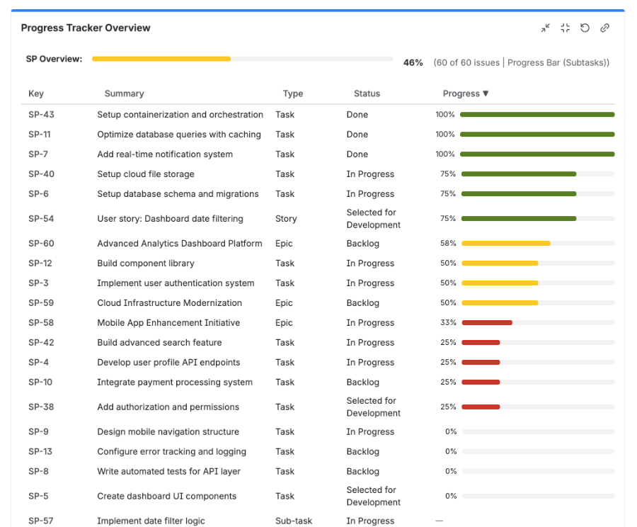

Visual Progress Tracker adds color-coded progress bars directly to your Jira issues.
Choose from three field types to match how your team tracks work:
Manual Progress Bar — Drag a slider to set any percentage (0–100%).
Status-Based Progress — Automatically maps workflow statuses to percentages.
Subtask Progress — Automatically calculates completion from resolved subtasks.
All three types display a colored bar that shifts from red
to yellow to green
as progress increases — giving your team instant, at-a-glance visibility.
Click Get it now (or Try it free for the Advanced edition).
Select your Jira Cloud site and confirm the installation.
Step 2 — Verify Installation
In Jira, click Apps in the top navigation bar.
You should see Visual Progress Tracker in the dropdown. Click it to open the Admin Settings page.
Tip: You only need to add the specific field types your team needs. You can use one, two, or all three — the app works with any combination.
3. Adding Progress Bar Fields
After installation, you need to add the progress bar fields to your Jira projects.
How to Add a Custom Field
Go to Jira Settings (gear icon) → Issues → Custom fields.
Click Create custom field.
In the search box, type Progress Bar. You will see the three available types:
Progress Bar (Manual)
Progress Bar (Status)
Progress Bar (Subtasks)
Select the field type you want, give it a name (e.g., "Progress"), and click Create.
Choose which screens the field should appear on (recommended: all screens).
Tip: You can name the fields anything you like — for example "Sprint Progress", "Completion", or "Task Status". The app detects fields by their type, not by name.
4. Field Type 1: Manual Progress Bar
The Manual Progress Bar lets users set the progress percentage by hand.
This is ideal for tasks where completion is subjective or estimated.
How it Works
Open any Jira issue that has the manual progress bar field.
You will see a colored progress bar with a drag slider.
Drag the slider left or right to set the percentage (0–100%).
The value saves automatically.
Use Cases
Design work, content creation, or other tasks with subjective milestones.
Teams that want simple, quick progress tracking without automation.
Combining with other estimation methods (story points, hours).
Tip: The manual field also appears during issue creation and transition screens, so team members can update progress as part of their normal workflow.
5. Field Type 2: Status-Based Progress
The Status Progress Bar automatically calculates a percentage based on the issue's
current workflow status. You configure which status maps to which percentage.
How it Works
Open the Admin Settings page (Apps → Visual Progress Tracker).
In the Status Mapping section, you'll see your workflow statuses listed.
Assign a percentage to each status (e.g., "To Do" = 0%, "In Progress" = 50%, "Done" = 100%).
Click Save.
Now every issue with the Status progress bar field will automatically show the mapped percentage.

Use Cases
Teams with well-defined workflows where status = progress.
Sprint tracking — instantly see where every issue stands.
Reporting dashboards that need automated, consistent data.
Note: If an issue's status is not mapped in the admin settings, the bar will show 0%. Make sure to map all your workflow statuses.
6. Field Type 3: Subtask Progress
The Subtask Progress Bar automatically calculates the percentage of resolved
child issues (subtasks). No configuration needed — it works out of the box.
How it Works
Add the Subtask progress bar field to a parent issue that has subtasks.
The bar automatically shows: (resolved subtasks / total subtasks) × 100%.
When subtasks are completed (resolved), the bar updates automatically via a trigger.
Example
A story has 4 subtasks. 2 are resolved, 2 are open → the bar shows 50% in yellow.
When all 4 are done → 100% in green.
Use Cases
Epic or story tracking with subtask breakdowns.
QA checklists — split testing tasks into subtasks and watch progress fill up.
Onboarding or setup tasks with multiple steps.
7. Viewing Progress in List View
All three field types are visible as columns in Jira list view, giving you a
project-wide overview of progress across all issues.

How to Add the Column
Open a project's List View (or Backlog).
Click the Columns icon (or right-click a column header).
Search for the name of your progress bar field.
Check the box to add it as a visible column.
Tip: Progress bars are fully color-coded in list view too. Scan your project for red bars to quickly identify items that need attention.
8. Admin Settings
Access the settings page from Apps → Visual Progress Tracker in the top navigation bar.

Color Thresholds
Customize when progress bars switch colors. Default values:
Red — 0% to 33%
Yellow — 34% to 66%
Green — 67% to 100%
Adjust these thresholds to match your team's expectations. For example, set the green threshold to 80% if you only want bars to turn green near completion.
Status Mapping
Map each Jira workflow status to a percentage. This drives the Status-Based Progress field.
Click Save after making changes.
Field Sync (Recalculate)
Use the Recalculate button to bulk-update all Status and Subtask progress fields
across all projects. This is useful after changing status mappings or when first setting up the app.
Tip: Manual progress bars are user-set and are not affected by the recalculate function.
9. Dashboard Gadget
The Progress Tracker Overview dashboard gadget shows a table of all issues
in a selected project with their progress values — perfect for team leads and stakeholders.

How to Add the Gadget
Open any Jira Dashboard.
Click Add gadget.
Search for Progress Tracker Overview.
Click Add.
In the gadget's edit mode, select a Project from the dropdown.
The gadget displays a table with all issues and their current progress.
10. Free vs. Advanced Edition
Feature
Standard FREE
Advanced PAID
Manual Progress Bar
Yes
Yes
Status-Based Progress
Yes
Yes
Subtask Progress
Yes
Yes
Default color thresholds
Yes
Yes
Custom color thresholds
—
Yes
Custom status mappings
—
Yes
Dashboard Gadget
—
Yes
Priority support
—
Yes
11. FAQ & Troubleshooting
The progress bar shows 0% even though the issue has a status mapped.
Click Recalculate in the Admin Settings to sync all fields. This is needed
after you first set up status mappings or change them.
I only see the manual field type — where are the others?
Each field type must be added separately as a custom field. Go to
Jira Settings → Issues → Custom fields → Create custom field
and search for "Progress Bar" to see all three types.
Can I use multiple field types on the same issue?
Yes! You can add all three fields to the same issue. For example, use the Manual bar for
overall progress and the Subtask bar to track child issue completion side-by-side.
Do progress bars update automatically?
Status and Subtask fields update automatically whenever an issue is created or updated
(via a background trigger). Manual fields only update when a user moves the slider.
I changed the color thresholds but the bars still show old colors.
Make sure you clicked Save in the Admin Settings. Then refresh the issue page.
The new thresholds apply immediately to all fields.
Where is my data stored?
All configuration data is stored in Atlassian Forge Storage within your Jira Cloud instance.
No data is sent to external servers. The app runs entirely on Atlassian infrastructure
(Runs on Atlassian).
How do I uninstall?
Go to Jira Settings → Apps → Manage apps, find Visual Progress Tracker, and click
Uninstall. This removes all app configuration data. Custom field values remain
in Jira until you delete the custom fields.